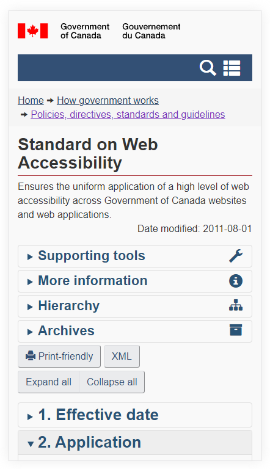
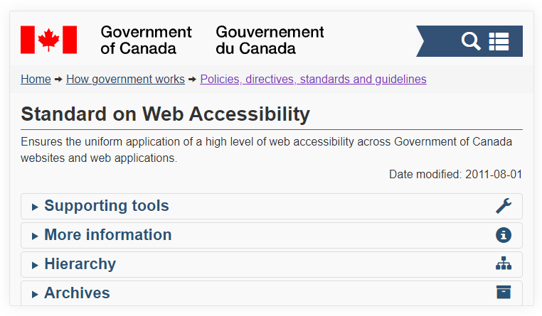

Orientation
Conception pour l’orientation
Conformément au critère de succès 1.3.4 des WCAG 2.1 : Orientation, le contenu ne limite pas sa vue et son fonctionnement à une orientation d’affichage unique, comme un portrait ou un paysage, à moins qu’une orientation d’affichage particulière soit essentielle.
Permettre aux utilisateurs de visualiser votre contenu dans l’orientation (portrait ou paysage) qu’ils préfèrent. Il est possible de restreindre l’orientation, mais cela peut créer des problèmes. Par exemple, certains utilisateurs font installer leurs appareils mobiles dans une orientation fixe (p. ex. sur le bras d’un fauteuil roulant électrique).
Le critère de succès permet de restreindre ou de verrouiller l’orientation si elle est essentielle à l’application, comme une orientation paysage pour représenter des touches de piano ou prendre une photo d’un chèque.
Mauvais exemple : Verrouillage de l’orientation de l’écran
Dans cet exemple, le contenu ne peut être affiché en mode paysage par une requête média CSS qui détectnnne l’orientation paysage et une règle de style de transformation qui fait tourner le contenu à 90 degrés (avec prise en charge des styles).
CSS
Début du code
@media screen and (min-width: 320px) and (max-width: 767px) and (orientation: landscape) {
html {
transform: rotate(-90deg);
transform-origin: left top;
width: 100vh;
overflow-x: hidden;
position: absolute;
top: 100%;
left: 0;
}
}
Fin du code
Source: Orientation Lock
Bon exemple : Orientation adaptée à l’écran
Dans cet exemple, la page affichant la Norme sur l’accessibilité des sites Web du gouvernement du Canada ne comporte aucun code touchant l’orientation de l’écran. La page tourne par défaut dans les appareils mobiles.
L'exemple commence
 L'exemple finit